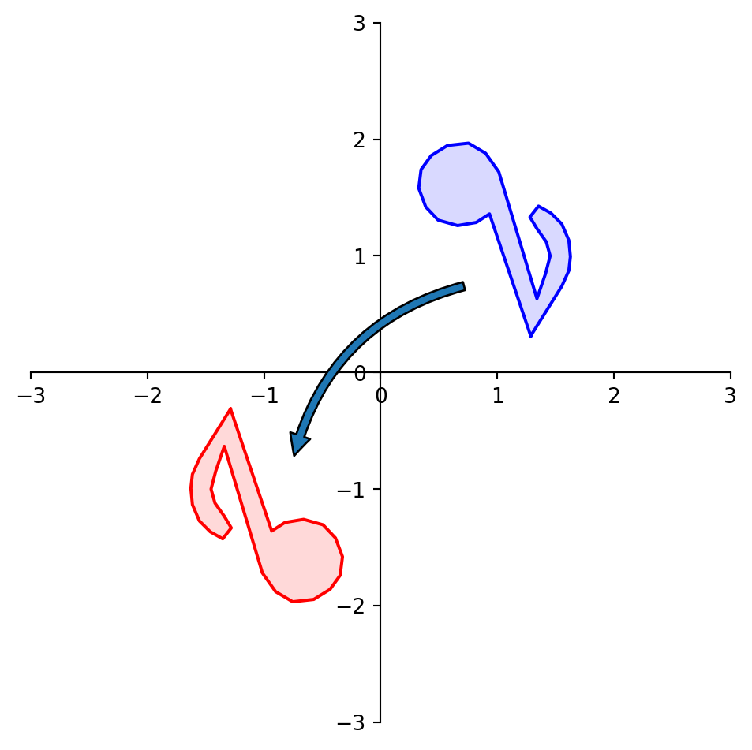
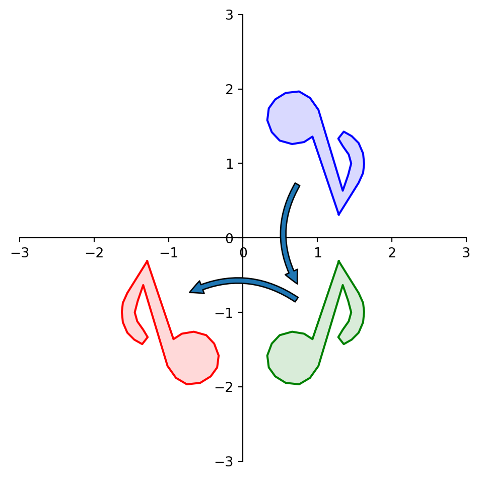
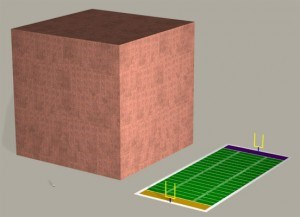

Matrix Algebra
Many parts of this page are based on Linear Algebra and its Applications, by David C. Lay
Today we will talk about multiplying matrices:
- How do you multiply matrices?
- What does the product of two matrices mean?
- What algebraic rules apply to matrix multiplication?
- What is the computational cost of matrix multiplication?

Early in his life, Arthur Cayley practiced law to support his passion for mathematics. During his time as a practicing lawyer, he published over 200 papers on mathematics. Finally at the age of 42 he got a position at Cambridge University and took a big pay cut so he could become a full-time mathematician. He said he never regretted the choice. Cayley often said, “I love my subject.”
In 1855-1857 Cayley formed the theory of matrices, and came up with a way to multiply matrices. As we’ll see, it is not the most obvious thing to do, but it was quickly realized that it was the “right” way. Cayley came about this idea by first thinking about linear transformations, and how to compose linear transformations. So that’s where we’ll start.
Composing Linear Transformations
Let’s start our discussion by recalling the linear transformation we called reflection through the origin.
Here is a picture of what this transformation does to a shape:
We determined that the matrix \(C = \left[\begin{array}{rr}-1&0\\0&-1\end{array}\right]\) implements this linear transformation.
But notice that we could have accomplished this another way:
- First reflect through the \(x_1\) axis
- Then reflect through the \(x_2\) axis

As we saw, to reflect a point through the \(x_1\) axis, we multiply it by matrix \(A = \left[\begin{array}{rr}1&0\\0&-1\end{array}\right]\).
Likewise, to reflect a point through the \(x_2\) axis, we multiply it by matrix \(B = \left[\begin{array}{rr}-1&0\\0&1\end{array}\right]\).
So, another way to reflect point \({\bf u}\) through the origin would be:
- \({\bf v} = A{\bf u}\)
- Followed by \({\bf w} = B{\bf v}.\)
In other words, \({\bf w} = B(A{\bf u}).\)
What we are doing here is called composing transformations.
In a composition of transformations, we take the output of one transformation as input for another transformation.
Now, here is the key point:
It is clear that \(B(A{\bf x})\) and \(C{\bf x}\) are the same linear transformation.
So, using \(C\) we can go directly to the solution using one multiplication, rather than having to multiply twice (once for \(A\) and once for \(B\)).
So a natural question is: given \(A\) and \(B\), could we find \(C\) directly?
In other words, for any \(A\) and \(B\), could we find \(C\) such that:
\[ A(B{\bf x}) = C{\bf x}? \]
Let’s determine how to find \(C\) given \(A\) and \(B.\)
If \(A\) is \(m \times n\), \(B\) is \(n \times p\), and \({\bf x} \in \mathbb{R}^p,\) denote the columns of \(B\) by \({\bf b_1},\dots,{\bf b_p},\) and the entries in \({\bf x}\) by \(x_1, \dots, x_p.\)
Then:
\[ B{\bf x} = x_1{\bf b_1} + \dots + x_p {\bf b_p}. \]
and:
\[A(B{\bf x}) = A(x_1{\bf b_1} + \dots + x_p {\bf b_p})\]
Since matrix-vector multiplication is a linear transformation:
\[ = x_1A{\bf b_1} + \dots + x_pA{\bf b_p}. \]
So the vector \(A(B{\bf x})\) is a linear combination of the vectors \(A{\bf b_1}, \dots, A{\bf b_p},\) using the entries in \({\bf x}\) as weights.
A linear combination of vectors is the same as a matrix-vector multiplication. In matrix terms, this linear combination is written:
\[ A(B{\bf x}) = [A{\bf b_1} \; \dots \; A{\bf b_p}] {\bf x}.\]
So this matrix \([A{\bf b_1} \; \dots \; A{\bf b_p}]\) is what we are looking for!
Matrix Multiplication
Definition. If \(A\) is an \(m \times n\) matrix and \(B\) is \(n \times p\) matrix with columns \({\bf b_1},\dots,{\bf b_p},\) then the product \(AB\) is defined as the \(m \times p\) matrix whose columns are \(A{\bf b_1}, \dots, A{\bf b_p}.\) That is,
\[ AB = A[{\bf b_1} \; \dots \; {\bf b_p}] = [A{\bf b_1} \; \dots \; A{\bf b_p}]. \]
This definition means that for any \(A\) and \(B\) for which \(AB\) is defined, then if \(C\) = \(AB\),
\[ C{\bf x} = A(B{\bf x}). \]
That is: multiplication of matrices corresponds to composition of linear transformations.
Note that when \(C = AB\), \(C{\bf x}\) is a vector in the span of the columns of \(A.\)
Example. Compute \(AB\) where \(A = \left[\begin{array}{rr}2&3\\1&-5\end{array}\right]\) and \(B = \left[\begin{array}{rrr}4&3&6\\1&-2&3\end{array}\right].\)
Solution. Write \(B = \left[{\bf b_1}\;{\bf b_2}\;{\bf b_3}\right],\) and compute:
\[ A{\bf b_1} = \left[\begin{array}{rr}2&3\\1&-5\end{array}\right]\left[\begin{array}{r}4\\1\end{array}\right],\;\;\; A{\bf b_2} = \left[\begin{array}{rr}2&3\\1&-5\end{array}\right]\left[\begin{array}{r}3\\-2\end{array}\right],\;\;\; A{\bf b_3} = \left[\begin{array}{rr}2&3\\1&-5\end{array}\right]\left[\begin{array}{r}6\\3\end{array}\right],\]
\[ = \left[\begin{array}{r}11\\-1\end{array}\right]\;\;\;\left[\begin{array}{r}0\\13\end{array}\right]\;\;\;\left[\begin{array}{r}21\\-9\end{array}\right].\]
So:
\[ AB = \left[A{\bf b_1}\;A{\bf b_2}\;A{\bf b_3}\right] = \left[\begin{array}{rrr}11&0&21\\-1&13&-9\end{array}\right].\]
Example. Verify that reflection through the \(x_1\) axis followed by reflection through the \(x_2\) axis is the same as reflection through the origin.
\[\left[\begin{array}{rr}-1&0\\0&1\end{array}\right]\left[\begin{array}{rr}1&0\\0&-1\end{array}\right] = \left[\begin{array}{rr}~&~\\~&~\end{array}\right].\]
\[\left[\begin{array}{rr}-1&0\\0&1\end{array}\right]\left[\begin{array}{rr}1&0\\0&-1\end{array}\right] = \left[\begin{array}{rr}-1&0\\0&-1\end{array}\right].\]
Note that this is a valid proof because every linear transformation of vectors is defined by its standard matrix.
Example. If \(A\) is a \(3 \times 5\) matrix, and \(B\) is a \(5 \times 2\) matrix, what are the sizes of \(AB\) and \(BA\), if they are defined?
\[\begin{array}{cccc}A&B&=&AB\\ 3\times 5&5 \times 2&& 3 \times 2\\ \left[\begin{array}{rrrrr}*&*&*&*&*\\ *&*&*&*&*\\ *&*&*&*&*\end{array}\right] & \left[\begin{array}{rr}*&*\\ *&*\\ *&*\\ *&*\\ *&*\end{array}\right] & = & \left[\begin{array}{rr}*&*\\ *&*\\ *&*\end{array}\right] \end{array}\]
What about \(BA\)?
It is not defined, because the number of columns of \(B\) does not match the number of rows of \(A\).
Facts.
If \(A\) is \(m\times n\), and \(B\) is \(p \times q\), then \(AB\) is defined if and only if \(n = p\). If \(AB\) is defined, then it is \(m \times q\).
\[\begin{array}{cccc}A&B&=&AB\\ 3\times \fbox{5}&\fbox{5} \times 2&& 3 \times 2\\ \end{array}\]
The Inner Product View of Matrix Multiplication
Recall that the inner product of two vectors \({\bf u}\) and \({\bf v}\) is \(\sum_k u_k v_k.\)
Also recall that one way to define the matrix vector product is \((A{\bf x})_i =\) inner product of \({\bf x}\) and row \(i\) of \(A\).
This immediately shows another way to think of matrix multiplication:
\((AB)_{ij} =\) inner product of row \(i\) of \(A\) and column \(j\) of \(B\)
\((AB)_{ij} = \sum_k A_{ik}B_{kj}.\)
Example. Start with the same matrices as the last example, \(A = \left[\begin{array}{rr}2&3\\1&-5\end{array}\right]\) and \(B = \left[\begin{array}{rrr}4&3&6\\1&-2&3\end{array}\right].\) Compute the entry in row 1 and column 3 of \(C\).
\[AB = \left[\begin{array}{rr}\fbox{2} & \fbox{3}\\1&-5\end{array}\right] \left[\begin{array}{rrr}4&3&\fbox{6}\\1&-2&\fbox{3}\end{array}\right] = \left[\begin{array}{rrc}*&*&2(6)+3(3)\\ *&*&*\end{array}\right] = \left[\begin{array}{rrr}*&*&21\\ *&*&*\end{array}\right].\]
This agrees with the result of the last example, and we could reproduce the whole solution by repeating this for each element of the result matrix.
Matrix Algebra
We’ve defined multiplication of two matrices. What about addition of two matrices?
This is straightfoward: if \(A\) and \(B\) are the same shape, we get \(A + B\) by adding the corresponding elements. (Just like adding vectors.)
That is,
\[(A + B)_{ij} = A_{ij} + B_{ij}.\]
If \(A\) and \(B\) are not the same shape, \(A + B\) is undefined.
Furthermore, we define scalar-matrix multiplication just as for vectors:
\[ (rA)_{ij} = r(A_{ij}).\]
So, just as we did for vectors, we can show that the standard properties of addition apply, and that scalar multiplication distributes over addition:
- \(A + B = B + A\)
- \((A + B) + C = A + (B + C)\)
- \(A + 0 = A\)
- \(r(A + B) = rA + rB\)
- \((r + s)A = rA + sA\)
- \(r(sA) = (rs)A\)
Furthermore, we find that some (but not all!) of the familiar properties of multiplication apply to matrix multiplication (assume that all sums and products are defined):
- \(A(BC) = (AB)C\)
- multiplication of matrices is associative
- \(A(B+C) = AB + AC\)
- multiplication on the left distributes over addition
- \((B+C)A = BA + CA\)
- multiplication on the right distributes over addition
- \(r(AB) = (rA)B = A(rB)\)
- for any scalar \(r\)
- \(I A = A = AI\)
Note that property 1 means that we can write \(ABC\) without bothering about parentheses.
Now, here is where things get different!
In general, \(AB\) is not equal to \(BA\). Multiplication is not commutative!
- Consider \(A = \left[\begin{array}{rr}1 & 1\\1&1\end{array}\right]\) and \(B = \left[\begin{array}{rr}1 & 1\\1&2\end{array}\right].\)
- In fact, even if \(AB\) is defined, \(BA\) may not be defined.
- On the other hand, sometimes \(A\) and \(B\) do commute.
- Consider \(A\) and \(B\) as the reflections through the \(x_1\) and \(x_2\) axis. Then \(AB\) and \(BA\) both implement reflection through the origin (i.e., the same transformation.) So in this case \(AB = BA\).
- You cannot, in general, cancel out matrices in a multiplication. That is, if \(AC = AB\), it does not follow that \(C = B\).
- Consider the case where \(A\) is the projection onto one of the axes.
- If \(AB\) is the zero matrix, you cannot in general conclude that either \(A\) or \(B\) must be a zero matrix.
- Consider \(A = \left[\begin{array}{rr}1 & 0\\0&0\end{array}\right]\) and \(B = \left[\begin{array}{rr}0 & 0\\0&1\end{array}\right].\)
Study and remember these rules. You will use them!
Powers of a Matrix
Equipped now with matrix-matrix multiplication, we can define the powers of a matrix in a straightforward way. For an integer \(k > 0\):
\[ A^k = \overbrace{A\cdots A}^k.\]
Obviously, \(A\) must be a square matrix for \(A^k\) to be defined.
What should \(A^0\) be?
\(A^0{\bf x}\) should be the result of multiplying \({\bf x}\) with \(A\) zero times. So we define \(A^0 = I\).
The Transpose of a Matrix
Given an \(m \times n\) matrix \(A,\) the transpose of \(A\) is the matrix we get by interchanging its rows and columns.
It is denoted \(A^T\). Its shape is \(n \times m\).
For example, if:
\[ \begin{array}{ccc} A = \left[\begin{array}{rr}a&b\\c&d\end{array}\right],& B = \left[\begin{array}{rr}-5&2\\1&-3\\0&4\end{array}\right],& C = \left[\begin{array}{rrrr}1&1&1&1\\-3&5&-2&7\end{array}\right] \end{array} \]
Then:
\[ \begin{array}{ccc} A^T = \left[\begin{array}{rr}a&c\\b&d\end{array}\right],& B^T = \left[\begin{array}{rrr}-5&1&0\\2&-3&4\end{array}\right],& C^T = \left[\begin{array}{rr}1&-3\\1&5\\1&-2\\1&7\end{array}\right] \end{array} \]
The definition can be stated succinctly:
\[A^T_{ij} = A_{ji}.\]
Rules for Transposes:
- \((A^T)^T = A\)
- \((A + B)^T = A^T + B^T\)
- For any scalar \(r\), \((rA)^T = r(A^T)\)
- \((AB)^T = B^TA^T\)
The first three are pretty obvious.
The last one is a bit different. Memorize it. You will use it: the transpose of a product is the product of the transposes in reverse order.
Question: For a vector in \({\bf x} \in \mathbb{R}^n\), what is \({\bf x}^T\)?
Answer: For the purposes of the definition, we treat \({\bf x}\) as a \(n \times 1\) matrix. So its transpose is an \(1\times n\) matrix, i.e., a matrix with a single row.
Question: For two vectors \({\bf x}\) and \({\bf y}\), what is \({\bf x}^T {\bf y}\)?
Answer: By the definition of matrix-vector multiplication, \({\bf x}^T {\bf y} = \sum_{i=1}^n x_i y_i.\)
That is, \({\bf x}^T {\bf y}\) is the inner product of \({\bf x}\) and \({\bf y}\). This simple construction is a very useful one to remember.
The Computational Viewpoint
You recall in the last lecture I said that in Python/numpy:
C = A @ Bwas the same as:
for i in range(k):
C[:,k] = AxIP(A, B[:,k])
So now you know: A @ B is really matrix multiplication of A and B. :)
Matrix multiplication is a mainstay of computing. Thousands of applications rely heavily on matrix multiplication.
Some examples include:
- Computer graphics and animation
- Google’s algorithm for ranking search results
- Modeling mechanical structures such as aircraft and buildings
- Compressing and decompressing audio signals
- Weather modeling and prediction
- Modeling quantum computing
So minimizing the time required to do matrix multiplication is immensely important.
Complexity
What is the computational complexity of matrix multiplication?
For two \(n \times n\) matrices, consider the definition that uses inner product:
\[ (AB)_{ij} = \sum_{k=1}^n A_{ik}B_{kj}.\]
So each element of the product \(AB\) requires \(n\) multiplications and \(n\) additions.
There are \(n^2\) elements of \(AB\), so the overall computation requires
\[2n \cdot n^2 = 2n^3\]
operations.
That’s not particularly good news; for two matrices of size 10,000 \(\times\) 10,000 (which is not particularly large in practice), this is 2 trillion operations (2 teraflops).
What is the computational complexity of matrix-vector multiplication?
We know that matrix-vector multiplication requires \(n\) inner products, each of size \(n\).
So, matrix-vector multiplication requires
\[2n^2\]
operations.
Order matters!
When you look at a mathematical expression involving matrices, think carefully about what it means and how you might efficiently compute it.
For example:
What is the most efficient way to compute \(A^2{\bf x}\)?
Here are your choices:
First compute \(A^2\), then compute \((A^2){\bf x}\)
First compute \(A{\bf x}\), then compute \(A(A{\bf x})\)
\[2n^3 + 2n^2\]
\[2 \cdot 2n^2 = 4n^2\]
Again, if we are working with a square matrix with 10,000 rows, then
\((A^2){\bf x}\) requires 2 Trillion flops
\(A(A{\bf x})\) requires 400 Million flops
Which would you choose? :)

One Trillion Pennies

One Million Pennies
Parallelization
Although matrix multiplication is computationally demanding, it has a wonderful property: it is highly parallel.
That is, the computation needed for each element does not require computing the other elements.
(This is not true, for example, for Gaussian elimination; think about the role of a pivot.)
This means that if we have multiple processors, and each has access to \(A\) and \(B\), the work can be divided up very cleanly.
For example, let’s say you have \(n\) processors. Then each processor can independently compute one column of the result, without needing to know anything about what the other processors are doing.
Specifically, processor \(i\) can compute its column as \(A{\bf b_i}\).
In that case, since all processors are working in parallel, the elapsed time is reduced from \(2n^3\) down to \(2n^2.\)
The Importance of Libraries
The pervasive use of matrix multiplication in science and engineering means that very efficient and carefully constructed libraries have been developed for it.
Important issues for high performance include:
- how are the matrix elements actually laid out in memory?
- what is the order in which matrix elements are accessed?
- what are the architectural details of the computer you are using?
- memories, caches, number of processors, etc
The premier library is called LAPACK.
LAPACK has been developed over the past 40 years and is updated frequently to tune it for new computer hardware.
Python’s “numpy” uses LAPACK under the hood for its matrix computations.
Hence, even though Python is an interpreted language, for doing intensive matrix computations it is very fast, just as fast as compiled code.